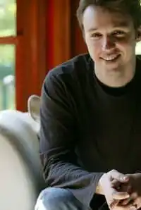
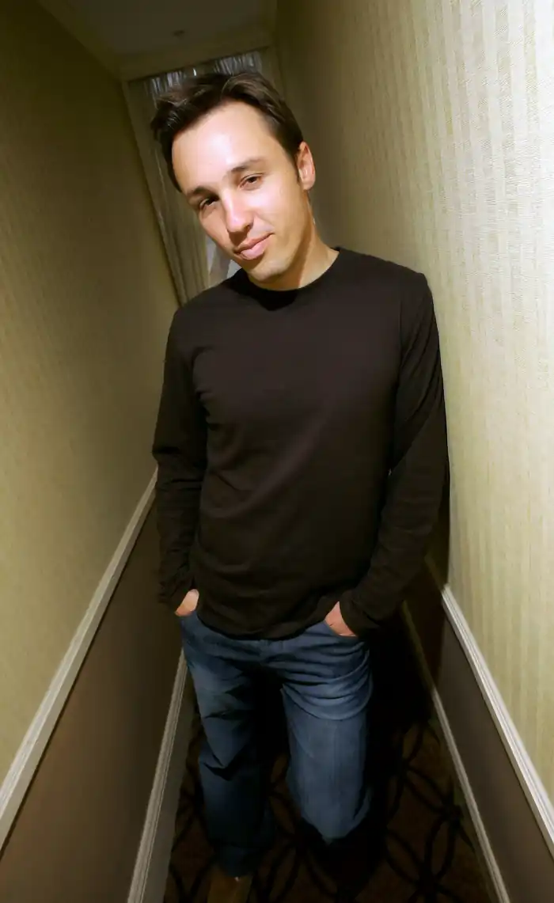
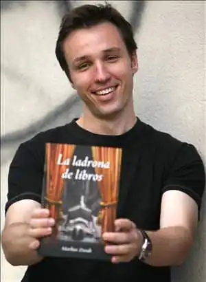

Письменницький стаж Маркуса Зузака(Зусака) відносно невеликий, і список його творів на справжній день включає в себе всього шість романів, проте кожна його книга ставала предметом дискусій читачів та рецензій авторитетних літературознавців. Твори цього письменника перекладено 40 мовами світу, нагороджені багатьма престижними преміями і входили в списки світових бестселерів. На відміну від більшості своїх ровесників-літераторів, Маркус Зузак не захоплюється пригодами у вигаданих світах, містичними таємницями і леденять кров трилерами. Його книги описують звичайних людей, які борються не з драконами або магами, а з реальними проблемами, і завойовують не престол королівства, а систему життєвих цінностей.
Маркус Франк Зузак (Markus Frank Zusak) народився 23 червня 1975 року у Сіднеї (Австралія). Його батьки були біженцями з післявоєнної Європи – маляр Гельмут Зузак емігрував з Австрії, а його дружина Ліза з Німеччини. Маркус був самим молодшим з чотирьох дітей. Хоча в дитинстві йому дуже подобалася батьківська професія маляра, хлопчик рано проявив здібності до літературної творчості: в 16 років він написав свій перший роман, публікації якого йому довелося чекати майже сім років.
Після закінчення університету Маркус Зузак деякий час працював вчителем англійської мови у школі, яку закінчив сам. Дебютний роман Маркуса Зузака ‘The Underdog' (російською мовою поки не видавався) вийшов у світ в 1999 році; це була історія п'ятнадцятирічного Камерона Вулфа, сина водопровідника і прибиральниці, і його непростих стосунків з родиною і дівчинкою, яка йому подобається. Книга отримала схвальні рецензії критиків, і в 2000 році вийшло її продовження ‘Fighting Ruben Wolfe', що розповідає про спроби братів Вулф заробити на життя нелегальними боксерськими боями; цей твір було названо Кращою дитячою книгою року. Третій роман трилогії про сім'ю Вулф, ‘When Dogs Cry' (2001), названий при виданні в США ‘Getting the Girl', також користувався успіхом і став Кращою дитячою книгою року. Резонансним з подією став вихід у 2002 році романа Зузака ‘The Messenger' (‘I Am the Messenger'). Герой книги, сором'язливий Ед Кеннеді, випадковим чином зумів запобігти пограбуванню банку; після цього йому таємничим чином доводиться зробити ще кілька шляхетних вчинків, які повністю змінюють свідомість молодої людини і допомагають йому знайти справжню любов. Ця книга отримала шість нагород на її основі була написана п'єса. Однак тріумфом Зузака став вийшов в 2005 році роман ‘The Book Thief', в основу якого лягли спогади батьків письменника про їх військовому дитинстві: бомбардування Мюнхена, потоки євреїв, що прямують в Дахау, голод і потіря близьких. Ірраціональність і реалізм, дитячі захоплення і політичні події, а насамперед виклад від першої особи, яким є сама Смерть – все це зробило книгу не просто бестселером, а подією в літературі. Книгу називали ‘вибухом свідомості' і ‘самим незвичайним романом нового часу', вона була нагороджена преміями. У 2013 році на основі роману знято фільм. В даний час Маркус Зузак разом з дружиною і двома дітьми мешкає у Сіднеї. Його останнім опублікованим твором став роман ‘Bridge of Clay' (2009), ідею якого він виношував понад 10 років. У вільний час письменник займається серфінгом і любить дивитися фільми.